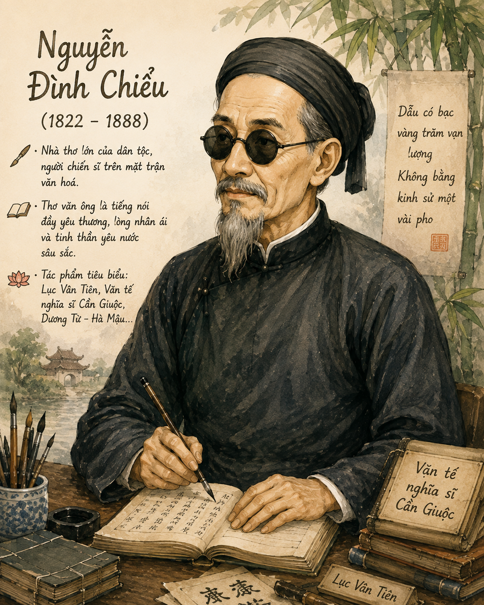

• Hãy kể vắn tắt hiểu biết của bạn về một tấm gương đã anh dũng hi sinh vì nền độc lập tự chủ của dân tộc trong thời kì chống thực dân Pháp xâm lược.
• Theo bạn, việc tưởng nhớ và tôn vinh những người đã hi sinh cho sự nghiệp bảo vệ Tổ quốc có ý nghĩa như thế nào trong việc giáo dục thế hệ trẻ hôm nay?

[Khung hình h1.png]Chân dung Nguyễn Đình Chiểu• Cuộc đời: Tự là Mạnh Trạch, hiệu Trọng Phủ, quê gốc ở Thừa Thiên, sinh tại Gia Định. Cuộc đời gặp nhiều bất hạnh (bị mù cả hai mắt, đường khoa cử dở dang), nhưng ông vẫn kiên cường sống có ích bằng nghề dạy học, bốc thuốc và sáng tác thơ văn.
• Khí tiết: Khi thực dân Pháp xâm lược Nam Bộ, ông tích cực cùng các nghĩa quân bàn mưu tính kế đánh giặc; kiên quyết giữ vững khí tiết, không hợp tác với kẻ thù.
• Tác phẩm chính: Các truyện thơ Nôm nổi tiếng như Lục Vân Tiên, Dương Từ - Hà Mậu, Ngư tiều y thuật vấn đáp, Văn tế nghĩa sĩ trận vong Lục tỉnh...
Nguyễn Đình Chiểu đã được tổ chức UNESCO chính thức vinh danh là Danh nhân văn hóa của nhân loại vào năm 2021. Tác phẩm của ông chủ yếu viết bằng chữ Nôm, hướng đến quần chúng nhân dân và đề cao đạo lý làm người.
• Hoàn cảnh sáng tác: Đêm 16/12/1861, những nghĩa sĩ nông dân tại Cần Giuộc (Long An) đã dũng cảm tập kích đồn giặc Pháp, diệt một số kẻ thù nhưng khoảng 20 nghĩa sĩ đã anh dũng hy sinh. Theo ủy thác của Tuần phủ Gia Định Đỗ Quang, Nguyễn Đình Chiểu viết bài văn tế này để đọc tại lễ truy điệu các anh hùng.
• Thể loại & Bút pháp: Viết theo thể phú Đường luật, sử dụng lối văn biền ngẫu (các cặp câu đối nhau). Bài văn tế kết hợp nhuần nhuyễn giữa nghị luận, tự sự và trữ tình biểu cảm.
Cấu trúc một bài văn tế truyền thống gồm 3-4 phần chính: Lung khởi/Tán (cảm hứng chung), Thích thực/Thán (hồi tưởng cuộc đời, công trạng), Ai cấu/Ai (bày tỏ niềm đau thương, tiếc xót) và Kê tóm/Khấn (lời thề và ca ngợi linh hồn bất tử).
• Bối cảnh thời đại: "Súng giặc đất rền; Lòng dân trời tỏ" - Bão táp chiến tranh bùng nổ, ranh giới giữa chính và tà phân định rõ ràng. Lòng dân đánh giặc chính là ý trời.
• Xuất thân: Nghĩa sĩ vốn là "dân ấp dân lân", người nông dân nghèo khổ, "cui cút làm ăn, toan lo nghèo khó".
• Hành trang: Chỉ quen tay cuốc, tay cày, chưa từng biết binh thư, tập khiên tập súng. Họ cầm vũ khí đứng lên hoàn toàn do "mến nghĩa làm quân chiêu mộ".
Giải thích: Mở đầu bằng cấu trúc đối lập ngắn gọn, dồn dập. "Súng giặc đất rền" báo hiệu hiểm họa xâm lược tàn khốc; "Lòng dân trời tỏ" khẳng định ý chí kiên cường, lòng yêu nước nồng nàn của nhân dân thấu tận trời xanh, khẳng định tính chất chính nghĩa của cuộc kháng chiến.
• Lòng căm thù giặc: "Ghét thói mọi như nhà nông ghét cỏ", "muốn tới ăn gan", "muốn ra cắn cổ". Tình cảm căm thù bộc trực, mãnh liệt của người nông dân Nam Bộ.
| Thực dân Pháp (Kẻ thù) | Nghĩa sĩ Cần Giuộc (Ta) |
|---|---|
| Đạn nhỏ đạn to, tàu sắt tàu đồng | Manh áo vải, một ngọn tầm vông |
| Trại lính bòng bong, hỏa lực hiện đại | Rơm con cúi, lưỡi dao phay |
| Quân cơ tinh nhuệ, cướp nước gian trá | Nông dân tay ngang, vì nghĩa quên thân |
• Tinh thần tiến công: Các động từ mạnh mẽ: đạp rào lướt tới, xô cửa xông vào, liều mình như chẳng có, kẻ đâm ngang người chém ngược làm quân địch "hồn kinh".
Hướng dẫn: Tác giả đặt hai hình ảnh đối lập tuyệt đối: một bên là vũ khí tối tân (súng, đạn, tàu sắt) của thực dân Pháp và một bên là trang bị thô sơ (áo vải, tầm vông, rơm con cúi, dao phay) của nghĩa sĩ. Qua đó làm nổi bật tinh thần quả cảm, chí khí anh hùng hy sinh vì đại nghĩa của người dân Nam Bộ.
Sử dụng các động từ hành động mạnh (đạp, lướt, xô, xông, đâm, chém) để rèn luyện kỹ năng viết đoạn văn miêu tả không khí chiến đấu hào hùng, tạo nhịp điệu dồn dập cho bài viết văn biểu cảm.
• Khúc ai ca đau thương: Cảnh đất trời và con người chịu nỗi đau mất mát: "cỏ cây mấy dặm sầu giăng", "mẹ già ngồi khóc trẻ", "vợ yếu chạy tìm chồng".
• Sự hy sinh bất tử: "Thác mà trả nước non rồi nợ, danh thơm đồn sáu tỉnh chúng đều khen". Sự hy sinh của họ không vô ích mà để lại tiếng thơm muôn đời, trở thành tượng đài nghệ thuật bất tử.
Lời giải chi tiết: Tính chất bi tráng hòa quyện giữa yếu tố Bi (đau thương, mất mát, nước mắt) và Tráng (hào hùng, oanh liệt, khí thế kiên cường). Dù người nghĩa sĩ ngã xuống nhưng tầm vóc và tư thế của họ vẫn hiên ngang, danh thơm sống mãi với sông núi đất nước.
Bài văn tế là bức tượng đài bi tráng bằng ngôn từ khắc họa hình tượng người nông dân nghĩa sĩ Cần Giuộc dũng cảm hy sinh vì Tổ quốc. Tác phẩm thể hiện lòng cảm phục, thương xót sâu sắc của tác giả và nhân dân đối với những người anh hùng.
- Ngôn ngữ bình dị, mang đậm dấu ấn Nam Bộ.
- Sử dụng bút pháp tương phản xuất sắc, nhịp điệu biền ngẫu trầm hùng.
- Sự kết hợp nhuần nhuyễn giữa chất trữ tình và chất nghị luận.
Hãy chọn đáp án đúng nhất cho 10 câu hỏi dưới đây!
Bài tập 1 (Phân tích nghệ thuật): Phân tích hiệu quả biểu đạt của các động từ mạnh trong câu văn tả trận đánh công đồn Cần Giuộc.
Lời giải:
- Các động từ mạnh như: đạp, lướt, xô, xông, đâm, chém... tạo nên nhịp điệu dồn dập, mạnh mẽ.
- Hiệu quả: Diễn tả thần tốc khí thế áp đảo của người nghĩa sĩ, biến vũ khí thô sơ thành sức mạnh vô song, khiến kẻ thù hiện đại cũng phải "hồn kinh". Điều này thể hiện tinh thần dũng cảm vô úy của người nông dân yêu nước.
Bài tập 2 (Kết nối đọc - viết): Trình bày quan điểm về nhận định: "Tượng đài người nghĩa sĩ Cần Giuộc là tượng đài bất tử mang tính bi tráng nhất trong văn học trung đại Việt Nam".
Lời giải:
1. Tính Bi: Nỗi đau đớn xót xa trước cái chết của những người nông dân hiền lành, tiếng khóc của mẹ già, vợ yếu, sự mất mát của quê hương.
2. Tính Tráng: Khí thế hào hùng, chí khí xả thân vì đại nghĩa, danh thơm lưu truyền muôn đời.
3. Ý nghĩa: Lần đầu tiên người nông dân - vốn bị lãng quên trong văn học phong kiến - xuất hiện ở vị trí trung tâm bức tượng đài lịch sử với vẻ đẹp anh hùng trọn vẹn.